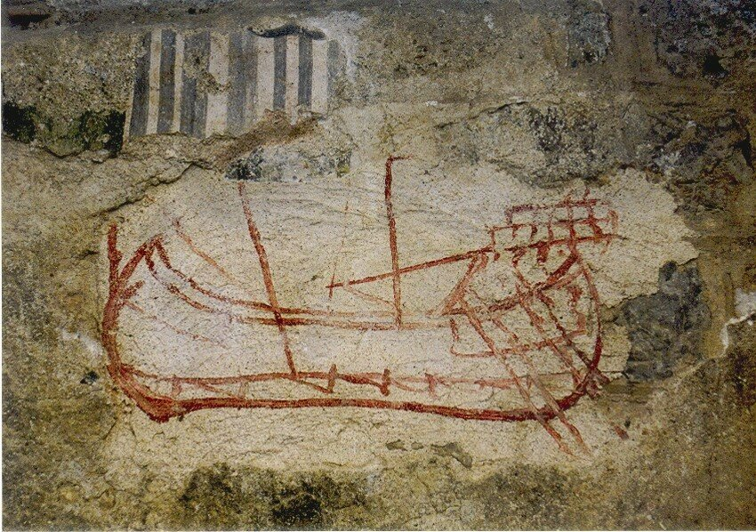
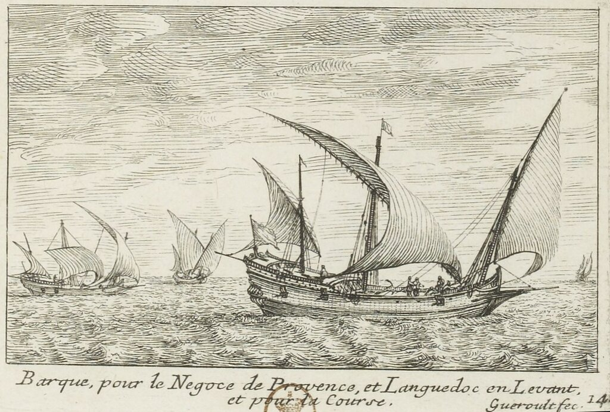
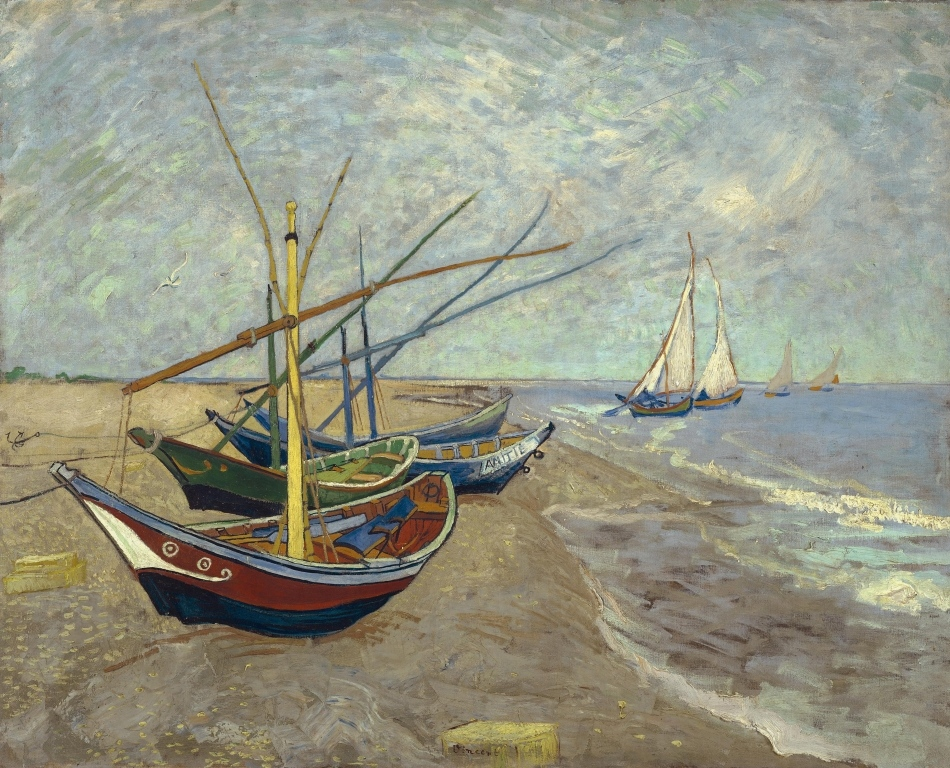
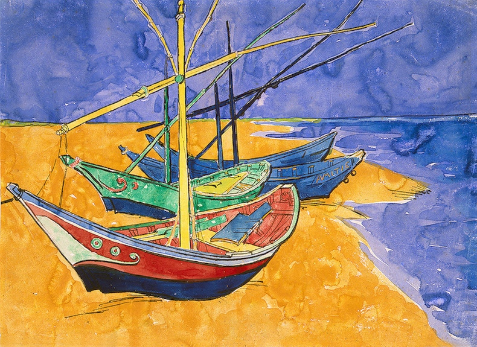
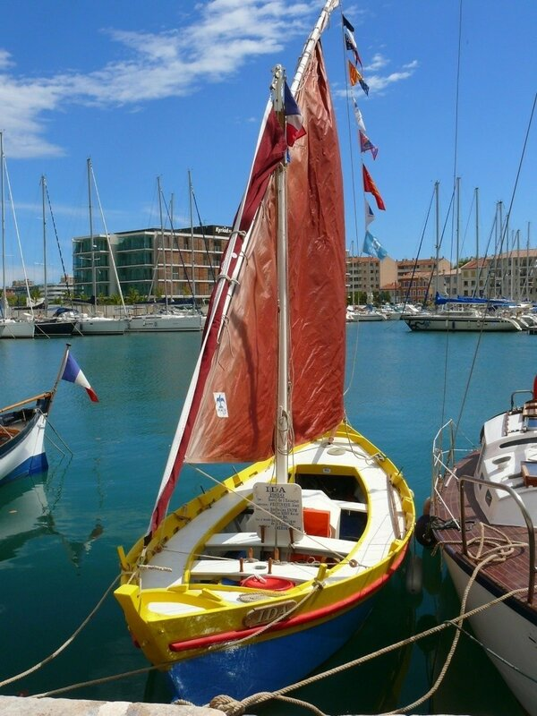
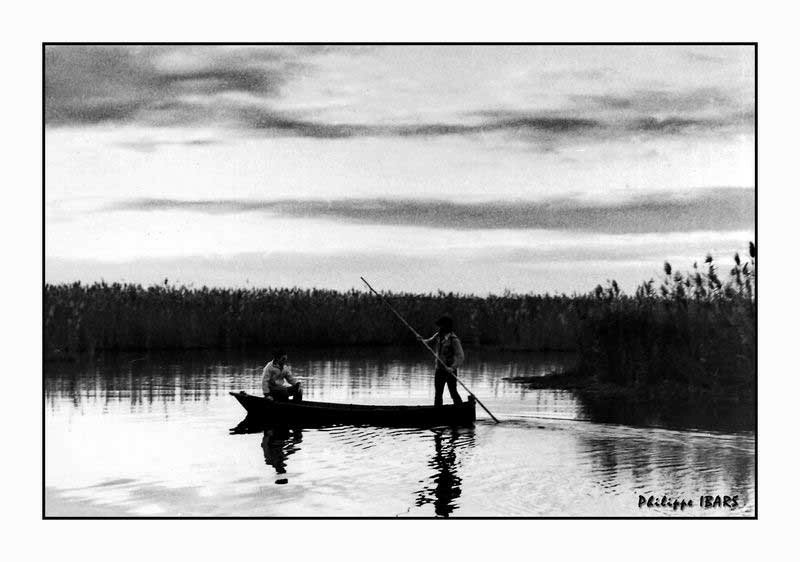
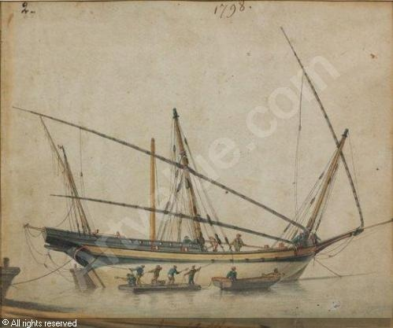

Типы генуэзских кораблей и судов - 1: barca, bastimento, betta
Нету
им
ни числа,
ни клички,
целая
лента типов
тянется.
В. В. Маяковский. Разговор с товарищем Лениным
Ясно, что те несколько слов, которые мы сказали в предыдущей главе о материалах, используемых в кораблестроении Лигурии, заставляют нас тут же сделать следующий шаг и ответить на вопрос: а какие вообще корабли и суда сходили со стапелей генуэзских верфей?

Одно из самых древних изображений корабельной верфи в Лигурии. Фреска на внутренней стене церкви в Финале (Савона). XIII век.
Мы подробно еще, видимо, поговорим об этом дальше, в особенности о галерах, но предварительно хотелось бы для справки поместить перечень кораблей и судов, когда либо строившихся на верфях Генуи, с указанием начальной и конечной дат их появления в генуэзских документах. Перечень этот составил итальянский морской историк Furio Ciciliot, я же всего лишь добавлю к нему несколько комментариев и замечаний.
Barca (с 1124 года по наши дни). Барка.
В этом термине есть много неопределенности, значение его менялось со временем. Мы видели, что в XIV веке названия barca и fregata были взаимозаменяемы (см., например, наш пост о ранней истории фрегатов). В XV веке barca становится основным типом судов каботажного плавания на Средиземном море, до 80 % перевозок в западной части Средиземноморья осуществляется с их помощью. И именно на таких кораблях совершались первые плавания вдоль африканского континента.
Мы уже писали, что первые изображения барок не дошли до нас. Зато есть прекрасная гравюра барки более позднего времени из альбома P. J. Gueroult du Pas «Recueil de veûes de tous les différens Bastimens de la mer Méditerranée, et de l 'Océan, avec leurs noms et usages » ( 1710 ), хранящегося в Национальной библиотеке Франции

Барка из Прованса и Лангедока для торговли с Левантом и патрулирования морской акватории
Bastimento (с 1741 до наших дней). Бастименто.
Названия этого типа корабля, как и предыдущего, сходно с общеродовым определением, которое можно перевести как «судно, корабль». Но подобно тому, как «корабль» не только общее понятие, но и название вполне конкретного типа, так и bastimento в указанный нами период иногда относилось к конкретному типу судна. Это, как правило, крупный корабль, обычно невооруженный, для перевозки крупногабаритных грузов.
Betta (1673-1837 гг.). Бета.
С этим судном мы сталкиваемся впервые, поэтому уделим его описанию немного больше времени. Начнем с наших дней. На южном побережье Франции мы можем встретить достаточно элегантное, легкое и маневренное суденышко, которое называется bette или beto. Классический пример этого судна мы встречаем на картине Винсента Ван Гога

Рыбацкие лодки на берегу в Saintes-Maries-de-la-mer, июнь 1888, Винсент Ван Гог, музей Ван Гога, Амстердам
В том же году Ван Гог сделал копию этой картины, на этот раз акварелью. Она находится в Эрмитаже.

Рыбацкие лодки на картинах Ван Гога – это как раз наши bette. Заостренные оконечности, плоское днище без киля, развалистые борта, мачта с как правило латинским вооружением – отличительные признаки этого судна. Такие суденышки и сейчас можно увидеть у причалов Лазурного берега. Строят их в основном в Марселе.

Управляют ими с помощью шеста (partègue) или весла.

Использование шеста (partègue) при управлении небольшим судном
В более ранние времена bette использовались для погрузки и разгрузки кораблей на рейде (в качестве тендера), для рыбной ловли. Баррас де ла Пенн, командир эскадры галер Людовика XIV, так описывает bette в 1697 году:
«Bette est une espece de batiment de charge dont on se sert dans le radoub ou le spalmage, pour y metre les boulets, la saune et divers agreils de la galere qu'on veut spalmer»
«Bette – вид грузового судна, которое применяется при ведении работ по ремонту или очистке подводной части галер, для доставки ядер, моющих средств и различные снастей, необходимых при креновании.»

Работы по очистке корпуса корабля при креновании. Художник ROUX Antoine Joseph Ange (1798)
Продолжение последует.